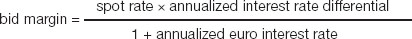
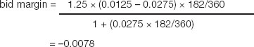

Clearly, exchange rate movements can lead to surprise gains and losses. For example, if you are dollar based and you sign a contract for €900,000 on the day that $1 = €0.90, you would expect to receive a cool one million dollars. But if the rate moved to $1 = €1.00 by the date you were paid, you would net only $900,000. There are four ways of dealing with this sort of situation:
speculation
netting
matching
hedging.
You could just live with exchange rate uncertainty, hope that rates move in your favour, and juggle your cash flow by delaying or accelerating payments and receipts to try to take advantage of exchange-rate movements. However, unless you are a currency dealer this is not what you are supposed to be doing. Strictly speaking, it may even be ultra vires – beyond your authority as defined by your company’s memorandum of association or bylaws (the objects clause of this important document defines what business you are in, such as software development, retailing specific goods, etc.). You might make currency gains by accidental or deliberate speculation, but the costs can be considerable and the outcome is, of course, not predictable with certainty.
If your company has enough overseas dealings, you may be able to net out receipts and payments in each currency. In the previous example, if the costs of running your operations in Europe were €900,000 in the period under consideration, you could keep the euros from the sale and use them to cover expenses. It is rather unlikely that you will be able to do this all the time. Where you can, you remove or minimize exchange rate risks. Significantly, there is little or no financial cost other than the opportunity cost of perhaps not having funds available at a different time, place or currency.
If you do not have foreign currency revenues and costs to net out, you could always create them. In the example given above, you could borrow euros when you sign the contract and clear the loan when you are paid. The interest payments on the loan are the price you pay for increased certainty. If the inverse applies, and you need to cover expenses due at a future date, you could covert the cash into the required currency and place it on deposit in the money markets or at a bank. It might appear that interest received on the deposit converts the exchange rate risk into a gain. However, of course, you would normally expect that company funds will generate a bigger profit than that which could be earned by putting the money on deposit – otherwise, why are you in business (this idea was discussed in the previous chapter).
Covering risks by matching or taking out forward contracts is known as hedging – as in hedging your bets.
Netting and matching are ways of hedging your bets, but the financial markets provide several derivatives of spot exchange rates which provide structured opportunities for avoiding or minimizing risks. The key derivatives are:
forward rates
futures
options
swaps.
Financial institutions generously provide a form of matching for you. Well, I was joking about generously, because they will charge you for it. This is how it works. You take out a forward contract to exchange euros for dollars (for the example introduced above) on a given date in the future. Essentially, your bank borrows euros today, sells them immediately for dollars, and puts the dollars on deposit. On the settlement date, the bank gives you the dollars and repays the loan with your euros. The cost to the bank is the difference between the interest paid on the loan in euros and the interest earned on the dollars. No one takes an exchange rate risk and the cost is related to relative interest rates (note: not to currency rate movements). Forward rates are quoted for 30, 60, 90 days and so on up to two years.
More dealer-talk. Forward exchange rates are usually quoted as margins on the spot rate, because the forward element does not jump around as much as spot rates. The margin, also known as swap rate or swap points, may be at a premium or discount, depending on relative interest rates. In the following example, the dollar is quoted at 1.0470–1.0475 to the euro, euro interest rates are higher than dollar interest rates, and so the six-month forward rate is at a discount which can be termed as follows:
$0.0078–0.0065, or
0.78 to 0.65 cents, or
78 to 65 points.
If the margin is at a premium, add it to the spot rate to arrive at the forward rate, or if the margin is standing at a discount, subtract it from the spot rate. In the example, the spread is €1 = $1.0392–1.0410.
| Bid | Offer | |
|---|---|---|
| US interest rate, 6 months, % | 1.2500 | 1.3750 |
| Euro interest rate, 6 months, % | 2.6250 | 2.7500 |
| Spot exchange rate, €1=$ | 1.0470 | 1.0475 |
| Margin (+ premium/ − discount) | −0.0078 | −0.0065 |
| Forward exchange rate, €1=$ | 1.0392 | 1.0410 |
Generic formula:

Example:

Suppose you have just signed a deal where you will receive €1 million in six months. If you had the euros in your hand right now, you could sell them for $1.0470 million (bid column, third figure down – easy, isn’t it?). The forward rate guarantees you $1.0392 million (bid column, final figure). The cost is the difference of $7,800, plus, sorry to say, any commission payable to your bankers. Apart from any performance guarantee (a bank might require security that you will honour the transaction) no money changes hands until the forward settlement date.
In principle, currency futures contracts and their pricing are the same as forward contracts. The main differences are that futures are standardized in size, quote mechanism and settlement dates, and they are traded on a regulated exchange (such as the Chicago Mercantile Exchange) by open outcry similar to, but perhaps not quite as civilized as, a schoolboys’ auction. The minimum price movement is a tick (essentially a pip, see above). The costs are brokerage fees and any margin required upfront to cover the final settlement.
Currency options provide the buyer with the right, but not the obligation, to buy (call) or sell (put) a specified amount of a foreign currency on a given date in the future. The great advantage of this is that it caps the downside risk, but still allows you to take advantage of favourable currency movements. There is a cost, of course, which is the premium that the writer will charge for accepting the risk.
The term swap means different things to different people. Here is one set of definitions.
A foreign exchange swap is a spot sale (or purchase) of currencies combined with a simultaneous forward purchase (or sale) of the same currencies. This is essentially what we discussed above.
Currency swaps are similar, but – inevitably – a little more complex. Essentially, they allow a corporation with recurring cash flows in a foreign currency, or one seeking financing in a foreign country, to eliminate exchange rate risk. Originally, the swap would take place directly between two companies, each with borrowing advantages in the market that the other wanted to tap. For example, a US company might borrow in dollars, while a European company would borrow in euros. They would then swap funds and repayment obligations. The US corporation would acquire the newly-borrowed euros (converted into dollars in the spot market) – and then use a future stream of revenue in euros to repay the euro loan. Within the past decade or so, currency swaps have developed to the point where a company can deal with a financial intermediary, rather than another company; where the principal might not be exchanged until maturity; and where only the price differential changes hands.
Interest rate swaps are not directly related to foreign trade, but it is convenient to mention them here. They involve an exchange of debt service obligations, but only in one currency. A company might exchange fixed for floating rate interest payments, often called simply a swap; or exchange maturities (e.g. three for six months) or tenors (e.g. a rate linked US dollar prime rate for one linked to US dollar LIBOR – see Chapter 19) in what is known as a basis swap.
Cross-currency interest rate swaps are a mix of the two swaps just outlined.
Clearly, you value these using the techniques for analysing exchange rates and interest rates discussed previously (see this chapter and Chapter 6).